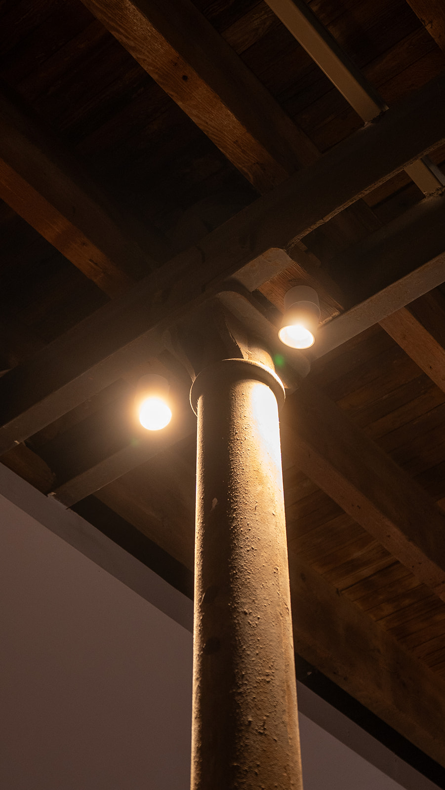
Quiénes somosUn espacio se recuerda por cómo se siente
Macroled ARQ es la vertical de Macroled dedicada, de manera exclusiva, a la arquitectura y el interiorismo.No es una marca aparte: es la misma ingeniería y la misma trayectoria, llevadas a otro nivel de exigencia.
Componentes de mayor calidad, terminaciones superiores y un diseño de vanguardia, pensados para quienes proyectan con visión.
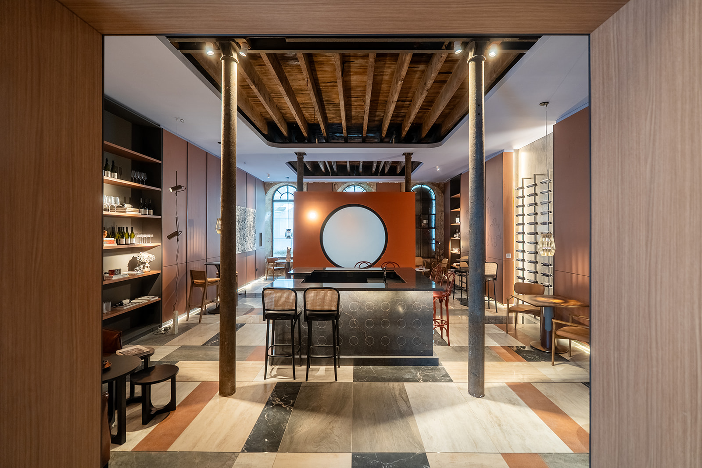
Cómo pensamos el producto
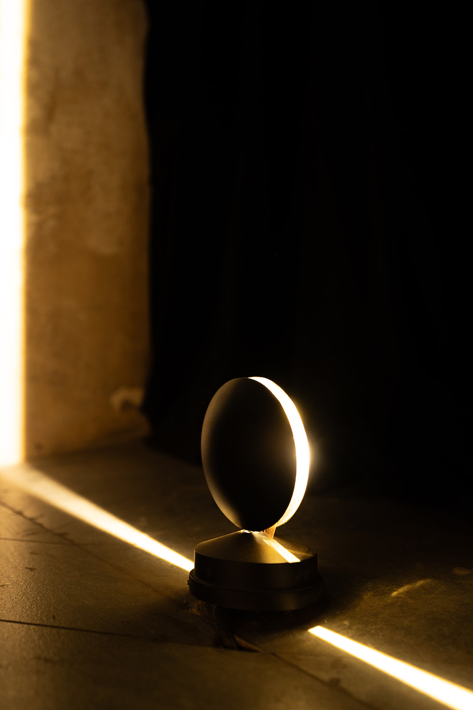
Confort visual
Nos interesa la calidad de la luz, no la cantidad. Cuidamos el deslumbramiento, el rendimiento cromático y la atmósfera que cada espacio necesita.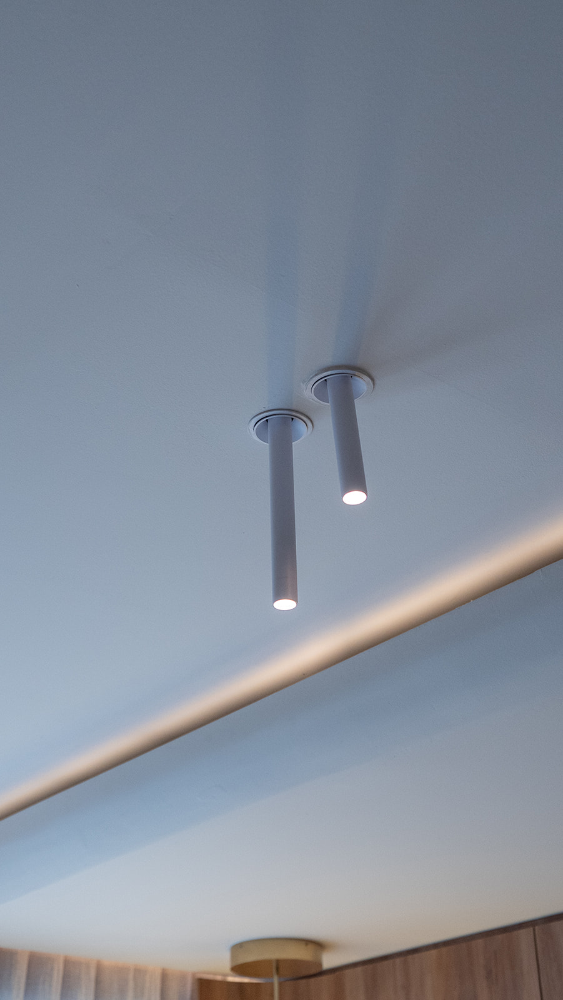
Pureza estética
Aluminio trabajado, uniones perfectas, sistemas trimless y magnéticos. Apagado, el producto es una pieza de diseño. Encendido, completa el espacio.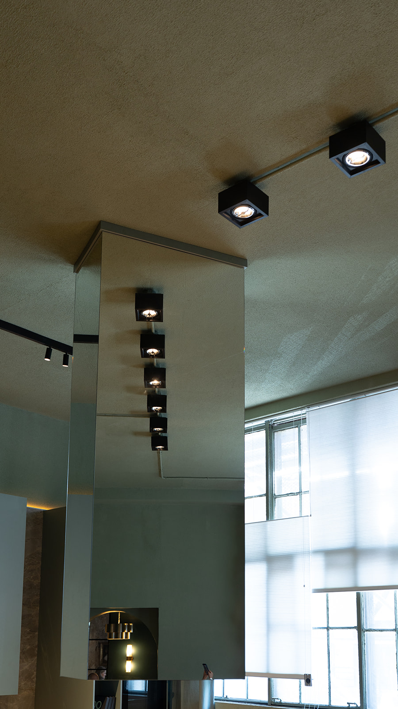
De profesional a profesional
Hablamos el idioma de la especificación. Sin rodeos ni explicaciones de más, con información técnica clara para que proyectar sea simple.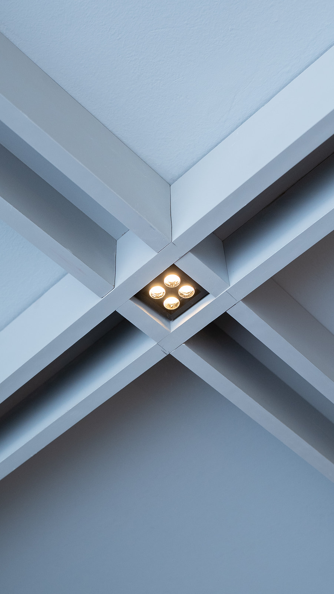
proyectosEspacios con identidad
Creemos que la arquitectura contemporánea merece herramientas a su altura. Que el producto tiene que elevar la obra y no limitarse a alumbrarla. Y que detrás de cada proyecto hay una idea que merece llegar a la realidad tal como fue concebida, sin resignar nada en el camino.Por eso existe Macroled ARQ: para que quien proyecta tenga, del otro lado, un socio que comparta su nivel de exigencia.
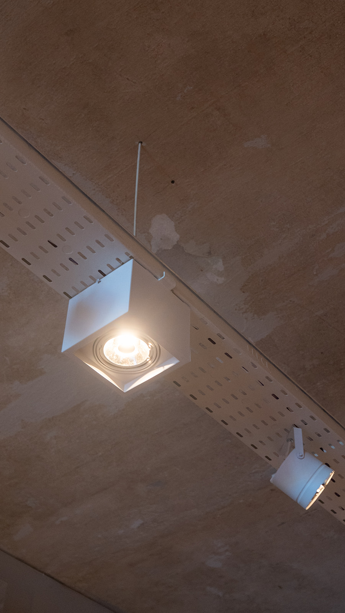

La luz acompaña.
No interrumpe.
Soluciones pensadas para integrarse al proyecto desde el boceto.
Dónde se pone a prueba.
Espacios en los que la luminaria trabaja con la materia.Un espacio bien resuelto no se nota. Se siente.
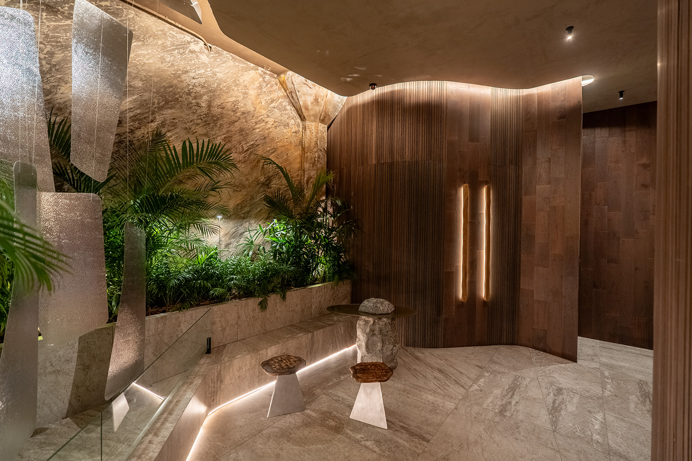
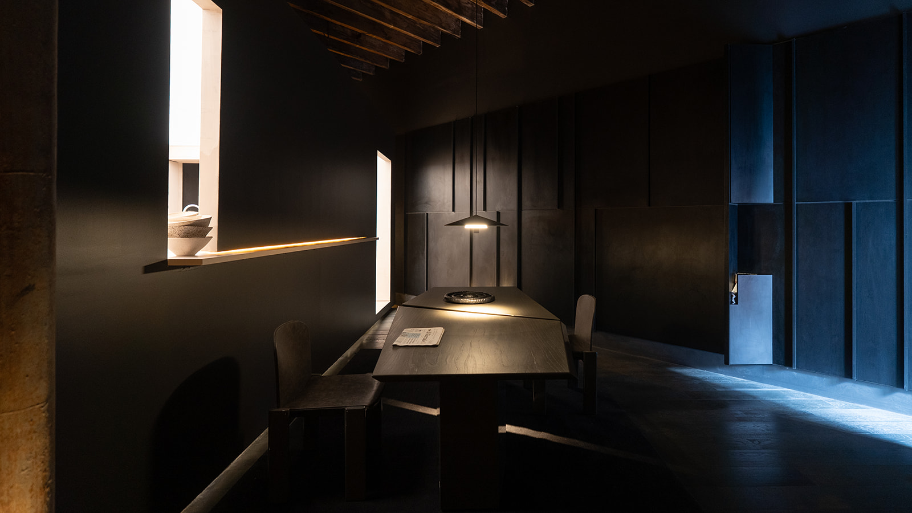
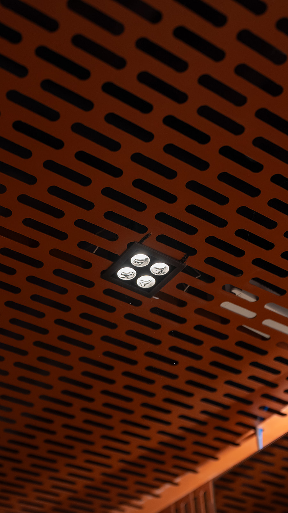
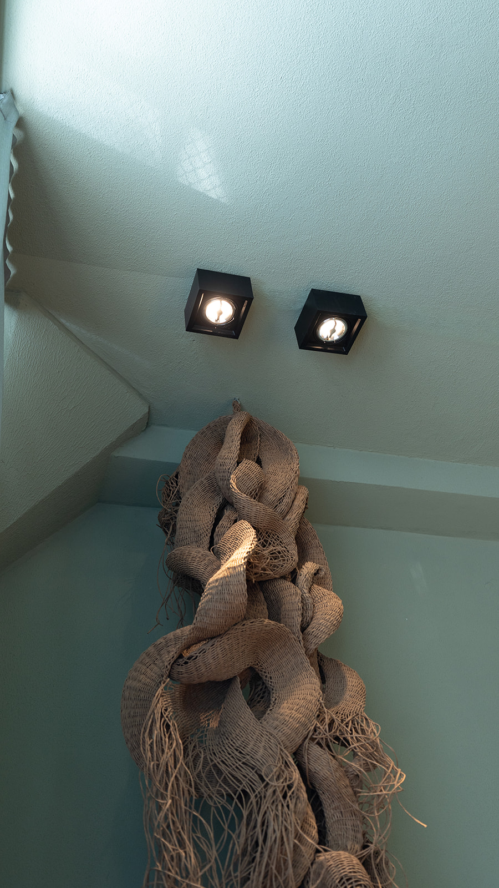